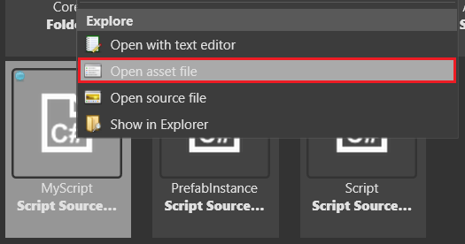

Stride for Unity® developers
Warning
Приносим свои извинения за неудобства. Для этой страницы нет перевода на русский язык. Она будет отображаться на английском языке.
Stride and Unity® both use C# and share many concepts, with a few major differences.

Editor
The Stride editor is Game Studio. This is the equivalent of the Unity® Editor.
You can customize the Game Studio layout by dragging tabs, similar to Visual Studio.
For more information about Game Studio, see the Game Studio page.
Terminology
Unity® and Stride use mostly common terms, with a few differences:
| Unity® | Stride |
|---|---|
| Hierarchy Window | Entity Tree |
| Inspector Window | Property Grid |
| Project Window | Asset View |
| Scene View | Scene Editor |
GameObject |
Entity |
MonoBehaviour |
SyncScript, AsyncScript, StartupScript |
Folders and files
Like Unity®, Stride projects are stored in a directory that contains:
The project
.slnsolution file, which you can open with Game Studio or any IDE such as Visual StudioA MyGame.Game folder with project source files, dependencies, resources, configurations, and binaries
Assets contains asset configuration files.
Bin contains the compiled binaries and data. Stride creates the folder when you build the project, with a subdirectory for each platform.
MyPackage.Game contains your source code.
- MyPackage.Platform contains additional code for the platforms your project supports. Game Studio creates folders for each platform (e.g. MyPackage.Windows, MyPackage.Linux, etc.). These folders are usually small and only contain the entry point of the program.
obj contains cached files. Game Studio creates this folder when you build your project. To force a complete asset and code rebuild, delete this folder and build the project again.
Resources is the recommended location for storing source files for your project, such as textures, models, and audio files.
Stride and Unity® differ in the following ways:
Stride doesn't automatically copy resource files to your project folder when you import them into assets. You have to do this yourself. We recommend you save them in the Resources folder.
Stride doesn't require resource files and asset files to be in the same folder. You can save resource files in the Assets folder if you want, but instead, we recommend you save them in the Resources folder. This makes sharing your project via version control easier.
For more information about project structure in Stride, including advice about how to organize and share your files, see the Project structure page.
Open the project directory from Game Studio
You can open the project directory from Project > Show in explorer in Game Studio.
Game settings
Unity® saves global settings in separate assets (i.e. Graphics Settings, Quality Settings, Audio Manager, and so on).
Stride saves global settings in a single asset, the Game Settings asset. You can configure:
- The default scene
- Rendering settings
- Editor settings
- Texture settings
- Physics settings
- Overrides
To use the Game Settings asset, in the Asset View, select GameSettings and view its properties in the Property Grid.

Scenes
Like Unity®, in Stride, you place all objects in a scene. Game Studio stores scenes as separate .sdscene assets in your project directory.
Set the default scene
You can have multiple scenes in your project. The scene that loads up as soon as your game starts is called the Default Scene.
To set the default scene:
In the GameSettings properties, next to Default Scene, click
 (Select an asset).
(Select an asset).The Select an asset window opens.
Select the default scene and click OK.
For more information about scenes, see Scenes.
Entities vs GameObjects
In Unity®, objects in the scene are called GameObjects. In Stride, they're called entities.

Like GameObjects, entities are carriers for components such as transform components, model components, audio components, and so on. If you're used to working with GameObjects in Unity®, you should have no problem using entities in Game Studio.
Entity components
In Stride, you add components to entities just like you add components to GameObjects in Unity®.
To add a component to an entity in Game Studio:
Select the entity you want to add the component to.
In the Property Grid (on the right by default), click Add component and select the component from the drop-down list.

Transform component
Like GameObjects in Unity®, each entity in Stride has a Transform component which sets its position, rotation, and scale in the world.
All entities are created with a Transform component by default.
In Stride, Transform components contain a LocalMatrix and a WorldMatrix that are updated in every Update frame. If you need to force an update sooner than that you can use TranformComponent.UpdateLocalMatrix(), Transform.UpdateWorldMatrix(), or Transform.UpdateLocalFromWorld() to do so, depending on how you need to update the matrix.
Local Position/Rotation/Scale
Stride uses position, rotation, and scale to refer to the local position, rotation, and scale.
| Unity® | Stride |
|---|---|
transform.localPosition |
Transform.Position |
transform.localRotation |
Transform.Rotation |
transform.localScale |
Transform.Scale |
transform.localEulerAngles |
Transform.RotationEulerXYZ |
World Position/Rotation/Scale
In comparison to Unity, many of the Transform component's properties related to its location in the world have been moved to the WorldMatrix.
| Unity® | Stride |
|---|---|
transform.position |
Transform.WorldMatrix.TranslationVector |
transform.rotation |
N/A |
transform.scale |
N/A |
transform.eulerAngles |
Transform.WorldMatrix.DecomposeXYZ(out Vector3 rotation) |
transform.scale and transform.position |
Transform.WorldMatrix.Decompose(out Vector3 scale, out Vector3 translation) |
transform.scale, transform.rotation, and transform.position |
Transform.WorldMatrix.Decompose(out Vector3 scale, out Quaternion rotation, out Vector3 translation) |
Note
WorldMatrix is only updated after the entire Update loop runs, which means that you may be reading outdated data if that object's or its parent's position changed between the previous frame and now.
To ensure you're reading the latest position and rotation, you should force the matrix to update by calling Transform.UpdateWorldMatrix() before reading from it.
Transform Directions
Unlike Unity, Stride provides a Backward, Left, and Down property. Note that those are matrix properties, so setting one of those is not enough to properly rotate the matrix.
| Unity® | Stride |
|---|---|
transform.forward |
Transform.WorldMatrix.Forward |
transform.forward * -1 |
Transform.WorldMatrix.Backward |
transform.right |
Transform.WorldMatrix.Right |
transform.right * -1 |
Transform.WorldMatrix.Left |
transform.up |
Transform.WorldMatrix.Up |
transform.up * -1 |
Transform.WorldMatrix.Down |
Note
See note in World Position/Rotation/Scale
Assets
In Unity®, you select an asset in the project browser and edit its properties in the Inspector tab.
Stride is similar. You select an asset in the Asset View and edit its properties in the Property Grid.

For certain types of assets, Game Studio also has dedicated editors:
- prefabs
- scenes
- sprite sheets
- UI pages
- UI libraries
- scripts
To open the dedicated editor for these types of assets:
- double-click the asset, or
- right-click the asset and select Edit asset, or
- select the asset and type Ctrl + Enter
The editor opens in a new tab. You can arrange the tabs how you like, or float them as separate windows, just like tabs in web browsers.

Note
When you modify resource files outside Game Studio, the corresponding assets update automatically in Game Studio.
Import assets
To import an asset, drag it from Explorer to the Asset View. You can also click an Add asset button, navigate to the desired file, and specify the type of asset you want to import.
As soon as you add an asset to your project, you can edit its properties in the Property Grid.

Note
Unlike Unity®, Stride doesn't automatically copy resource files to the project directory when you import them to projects.
Supported file formats
Like Unity®, Stride supports file formats including:
| Asset type | Supported formats |
|---|---|
| Models, animations, skeletons | .fbx, .dae, .3ds, .obj, .blend, .x, .md2, .md3, .dxf |
| Sprites, textures, skyboxes | .dds, .jpg, .jpeg, .png, .gif, .bmp, .tga, .psd, .tif, .tiff |
| Audio | .wav, .mp3, .ogg, .aac, .aiff, .flac, .m4a, .wma, .mpc |
| Fonts | .ttf, .otf |
| Video | .mp4 |
For more information about assets, see Assets.
Prefabs
Like Unity®, Stride uses prefabs. Prefabs are "master" versions of objects that you can reuse wherever you need. When you change a prefab, every instance of the prefab changes too.
Just like with Unity®, in Stride, you can add prefabs to other prefabs. These are called nested prefabs. If you modify a nested prefab, all the dependent prefabs inherit the change automatically.
For example, imagine you create a Vehicle prefab with acceleration, braking, steering, and so on. Then you nest the Vehicle prefab inside prefabs of different types of vehicles: a taxi, bus, truck, etc. If you adjust a property in the Vehicle prefab, the changes are inherited by all other prefabs. For example, if you increase the Acceleration property in the Vehicle prefab, the acceleration property in the taxi, bus, and truck prefabs also increase.
For more information about using prefabs in Stride, see Prefabs.
Archetypes
Archetypes are master assets that control the properties of assets you derive from them. Derived assets are useful when you want to create a "remixed" version of an asset. This is similar to prefabs.
For example, imagine we have three sphere entities that share a material asset named Metal. Now imagine we want to change the color of only one sphere, but keep its other properties the same. We could duplicate the material asset, change its color, and then apply the new asset to only one sphere. But if we later want to change a different property across all the spheres, we have to modify both assets. This is time-consuming and leaves room for mistakes.
The better approach is to derive a new asset from the archetype. The derived asset inherits properties from the archetype and lets you override individual properties where you need them. For example, we can derive the sphere's material asset and override its color. Then, if we change the gloss of the archetype, the gloss of all three spheres changes.

You can derive an asset from an archetype, then in turn derive another asset from that derived asset. This way you can create different layers of assets to keep your project organized:
Archetype
Derived asset
Derived asset
For more information about archetypes, see Archetypes.
Object Life Time
Entities and components are not destroyed in Stride, they are removed from the scene they exist in and then freed by the Garbage Collector.
This seemingly small difference significantly changes how objects are managed within the engine. For example, entities can be removed from a scene, kept as a reference in a component, and added back into another scene later on. Components can be removed from an entity and added onto another without losing its internal state.
Input
Stride supports a variety of inputs. The code samples below demonstrate the difference in input code between Stride and Unity®.
For more information about Input in Stride, see Input.
Unity®
void Update()
{
// true for one frame in which the space bar was pressed
if (Input.GetKeyDown(KeyCode.Space))
{
// Do something.
}
// true while this joystick button is down
if (Input.GetButton("joystick button 0"))
{
// Do something.
}
float horiz = Input.GetAxis("Horizontal");
float vert = Input.GetAxis("Vertical");
// Do something else.
}
Stride
public override void Update()
{
// true for one frame in which the space bar was pressed
if (Input.IsKeyDown(Keys.Space))
{
// Do something.
}
// true while this joystick button is down
if (Input.GameControllers[0].IsButtonDown(0))
{
// Do something.
}
float horiz = (Input.IsKeyDown(Keys.Left) ? -1f : 0) + (Input.IsKeyDown(Keys.Right) ? 1f : 0);
float vert = (Input.IsKeyDown(Keys.Down) ? -1f : 0) + (Input.IsKeyDown(Keys.Up) ? 1f : 0);
// Do something else.
}
Time
| Unity® | Stride |
|---|---|
Time.deltaTime |
Game.UpdateTime.WarpElapsed.TotalSeconds |
Time.unscaledDeltaTime |
Game.UpdateTime.Elapsed.TotalSeconds |
Time.realtimeSinceStartup |
Game.UpdateTime.Total.TotalSeconds |
Time.timeScale |
Game.UpdateTime.Factor |
Time.fixedDeltaTime |
myRigidbodyComponent.Simulation.FixedTimeStep |
Physics
Just like Unity®, Stride has three types of colliders:
- static colliders
- rigidbodies
- characters
They're controlled by scripts in slightly different ways.
Kinematic rigidbodies
Unity®
public class KinematicX : MonoBehaviour
{
public Rigidbody rigidBody;
void Start()
{
// Initialization of the component.
rigidBody = GetComponent<Rigidbody>();
}
void EnableRagdoll()
{
rigidBody.isKinematic = false;
rigidBody.detectCollisions = true;
}
void DisableRagdoll()
{
rigidBody.isKinematic = true;
rigidBody.detectCollisions = false;
}
}
Stride
public class KinematicX : SyncScript
{
public RigidbodyComponent rigidBody;
public override void Start()
{
// Initialization of the component.
rigidBody = Entity.Get<RigidbodyComponent>();
}
public override void Update()
{
// Perform an update every frame.
}
void EnableRagdoll()
{
rigidBody.IsKinematic = false;
rigidBody.ProcessCollisions = true;
}
void DisableRagdoll()
{
rigidBody.IsKinematic = true;
rigidBody.ProcessCollisions = false;
}
}
For more information about rigidbodies in Stride, see Rigidbodies.
Triggers
Unity®
// Occurs when game objects go through this trigger.
void OnTriggerEnter(Collider Other)
{
Other.transform.localScale = new Vector3(2.0f, 2.0f, 2.0f);
}
// Occurs when game objects move out of this trigger.
void OnTriggerExit(Collider Other)
{
Other.transform.localScale = new Vector3(1.0f, 1.0f, 1.0f);
}
Stride
var trigger = Entity.Get<PhysicsComponent>();
trigger.ProcessCollisions = true;
// Start state machine.
while (Game.IsRunning)
{
// 1. Wait for an entity to collide with the trigger.
Collision firstCollision = await trigger.NewCollision();
PhysicsComponent otherCollider = trigger == firstCollision.ColliderA
? firstCollision.ColliderB
: firstCollision.ColliderA;
otherCollider.Entity.Transform.Scale = new Vector3(2.0f, 2.0f, 2.0f);
// 2. Wait for the entity to exit the trigger.
Collision collision;
do
{
collision = await trigger.CollisionEnded();
}
while (collision != firstCollision);
otherCollider.Entity.Transform.Scale = new Vector3(1.0f, 1.0f, 1.0f);
}
For more information about triggers in Stride, see Triggers
Raycasting
Unity®
public static Collider FindGOCameraIsLookingAt()
{
int distance = 50;
// Cast a ray and set it to the mouse cursor position in the game
Ray ray = Camera.main.ScreenPointToRay(Input.mousePosition);
RaycastHit hit;
if (Physics.Raycast(ray, out hit, distance))
{
// Draw invisible ray cast/vector
Debug.DrawLine(ray.origin, hit.point);
// Log hit area to the console
Debug.Log(hit.point);
return hit.collider;
}
return null;
}
Stride
public static bool ScreenPositionToWorldPositionRaycast(Vector2 screenPos, CameraComponent camera, Simulation simulation)
{
Matrix invViewProj = Matrix.Invert(camera.ViewProjectionMatrix);
Vector3 sPos;
sPos.X = screenPos.X * 2f - 1f;
sPos.Y = 1f - screenPos.Y * 2f;
sPos.Z = 0f;
Vector4 vectorNear = Vector3.Transform(sPos, invViewProj);
vectorNear /= vectorNear.W;
sPos.Z = 1f;
Vector4 vectorFar = Vector3.Transform(sPos, invViewProj);
vectorFar /= vectorFar.W;
HitResult result = simulation.Raycast(vectorNear.XYZ(), vectorFar.XYZ());
return result.Succeeded;
}
For more information about Raycasting in Stride, see Raycasting.
Scripts
Stride saves scripts in a subfolder in the MyGame.Game folder in the project directory.
To open a script in the Game Studio script editor, double-click it in the Asset View. The script editor has syntax highlighting, auto-completion, and live diagnostics.

You can also edit scripts in other IDEs, such as Visual Studio. When you edit a script in an external IDE, Stride reloads it automatically.
If you install the Visual Studio plug-in during the Stride installation, you can open your project in Visual Studio from Game Studio. To do this, in the Game Studio toolbar, click Open in IDE.
Alternatively, right-click the script in the Asset View and click Open asset file:

Event functions (Start, Update, Execute, etc)
In Unity®, you work with MonoBehaviours with Start(), Update(), and other methods.
Instead of MonoBehaviours, Stride has three types of scripts: SyncScript, AsyncScript, and StartupScript. For more information, see Types of script.
Unity® MonoBehaviour
public class BasicMethods : MonoBehaviour
{
void Start() { }
void OnDestroy() { }
void Update() { }
}
Stride SyncScript
public class BasicMethods : SyncScript
{
public override void Start() { }
public override void Cancel() { }
public override void Update() { }
}
Stride AsyncScript
public class BasicMethods : AsyncScript
{
// Declared public member fields and properties that will appear in the game studio
public override async Task Execute()
{
while (Game.IsRunning)
{
// Do stuff every new frame
await Script.NextFrame();
}
}
public override void Cancel()
{
// Cleanup of the script
}
}
Stride StartupScript
public class BasicMethods : StartupScript
{
// Declared public member fields and properties that will appear in the game studio
public override void Start()
{
// Initialization of the script
}
public override void Cancel()
{
// Cleanup of the script
}
}
Script components
Like Unity®, in Stride, you attach scripts to entities by adding them as script components.
Create a script
To create a script, click the Add asset button and select Scripts.

In Unity®, when you create a MonoBehaviour script, it has two base functions: MonoBehaviour.Start() and MonoBehaviour.Update(). Stride has a SyncScript that works similarly. Like MonoBehaviour, SyncScript has two methods:
SyncScript.Start()is called when it the script is loaded.SyncScript.Update()is called every update.
Unlike MonoBehaviour, implementating the SyncScript.Update() method is not optional, and as such, must be implemented in every SyncScript.
If you want your script to be a startup or asynchronous, use the corresponding script types:
StartupScript: this script has a singleStartupScript.Start()method. It initializes the scene and its content at startup.AsyncScript: an asynchronous script with a single methodAsyncScript.Execute()and you can use async/await inside that method. Asynchronous scripts aren't loaded one by one like synchronous scripts. Instead, they're all loaded in parallel.
Reload assemblies
After you create a script, you may have to reload the assemblies manually. To do this, click Reload assemblies in the Game Studio toolbar.
Add scripts to entities
In the Entity Tree (on the left by default), or in the scene, select the entity you want to add the script to.

In the Property Grid (on the right by default), click Add component and select the script you want to add.

In Unity®, script components are grouped under Components > Scripts. In Stride, scripts are not grouped. Instead, Game Studio lists them alphabetically with other components.
For more information about adding scripts in Stride, see Use a script.
Scripting gameplay
Unity® and Stride both use C#. However, scripting gameplay in Stride is a little different from Unity®.
Instantiate Entity / GameObject
In Unity®, you use Instantiate to create new object instances. This function makes a copy of UnityEngine.Object and spawns it to the scene.
Unity®
public GameObject CarPrefab;
public Vector3 SpawnPosition;
public Quaternion SpawnRotation;
void Start()
{
GameObject newGameObject = (GameObject)Instantiate(CarPrefab, SpawnPosition, SpawnRotation);
newGameObject.name = "NewGameObject1";
}
Stride
In Stride, you can instantiate Entities similarly to Unity® GameObjects:
// Declared public member fields and properties displayed in the Game Studio Property Grid.
public Prefab CarPrefab;
public Vector3 SpawnPosition;
public Quaternion SpawnRotation;
public override void Start()
{
// Initialization of the script.
List<Entity> car = CarPrefab.Instantiate();
SceneSystem.SceneInstance.RootScene.Entities.AddRange(car);
car[0].Transform.Position = SpawnPosition;
car[0].Transform.Rotation = SpawnRotation;
car[0].Name = "MyNewEntity";
}
Use default values
Each class in Unity® has certain default values. If you don't override these properties in the script, the default values will be used. This works the same in Stride:
Unity®
public int NewProp = 30;
public Light MyLightComponent = null;
void Start()
{
// Create the light component if we don't already have one.
if (MyLightComponent == null)
{
MyLightComponent = gameObject.AddComponent<Light>();
MyLightComponent.intensity = 3;
}
}
Stride
// Declared public member fields and properties displayed in the Game Studio Property Grid.
public int NewProp = 30;
public LightComponent MyLightComponent = null;
public override void Start()
{
// Create the light component if we don't already have one.
if (MyLightComponent == null)
{
MyLightComponent = new LightComponent();
MyLightComponent.Intensity = 3;
Entity.Add(MyLightComponent);
}
}
Disable GameObject/entity
Unity®
MyGameObject.SetActive(false);
Stride
Entity.EnableAll(false, true);
Access component from GameObject/entity
Unity®
Light lightComponent = GetComponent<Light>();
Stride
LightComponent lightComponent = Entity.Get<LightComponent>();
Access GameObject/entity from component
Unity®
GameObject componentGameObject = lightComponent.gameObject;
Stride
Entity componentEntity = lightComponent.Entity;
Log output
To see the output, in the Game Studio toolbar, under View, enable Output.

Game Studio displays in the Output tab (at the bottom of Game Studio by default).

Print debug messages
Logging from a ScriptComponent:
public override void Start()
{
// Enables logging. It will also spawn a console window if no debuggers are attached.
// The argument dictates the kinds of message that will be filtered out, in this case, anything with less priority than warning won't show up
Log.ActivateLog(LogMessageType.Warning);
// Log this message to your console or IDE output window
Log.Warning("hello");
}
System.Diagnostics.Debug.WriteLine("hello");
Note
To print debug messages, you have to run the game from your IDE, not Game Studio. Running games cannot print to the Game Studio output window.
Attributes
| Unity® | Stride |
|---|---|
[Serializable] |
[DataContract] |
[SerializeField] |
[DataMember] |
[HideInInspector] |
[DataMemberIgnore] |
[Range] |
[DataMemberRange] |
[Header("My Header")] |
[Display(category: "My Header")] |
[Tooltip("My tooltip")] |
/// <userdoc>My tooltip</userdoc> |
Note
You cannot serialize private fields in Stride, if you want to set a field in editor but prevent other scripts from writing to that field, you should use a init property
public float MyProperty { get; init; }
Unity® is a trademark of Unity Technologies.